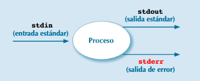

1.9. Concurrencia en Java (II)
1.9.3. Redirección de entrada y salida estándares y de error
Las clases ProcessBuilder y Process proporcionan
diversos mecanismos para redireccionar y gestionar la salida y entrada de los procesos. Esto podría
no funcionar bien en algunas plataformas, debido a limitaciones en los buffers utilizados para ellas
por el sistema operativo particular. Estos mecanismos se aprovechan en algunos de los programas de
ejemplo que se presentan a continuación.
Los conceptos de entrada y salida estándares y de salida de error se introdujeron en el sistema operativo UNIX, y se implementaron posteriormente en Linux y Windows. Cualquier proceso tiene acceso a varios streams o flujos de bytes.
- Entrada estándar o stdin (standard input). Es un stream de entrada del que puede leer datos. Normalmente, se lean datos sobre los que se realiza algún procesamiento. Por defecto, suele estar asociada al teclado, de manera que el programa puede leer de teclado el texto que se introduce por teclado.
- Salida estándar o stdout (standard output). Es un stream de salida en el que se pueden escribir datos. Una manera sencilla en que un programa puede generar su salida es escribirla en la salida estándar. Por defecto, suele estar asociada a la pantalla, de manera que todo el texto que se envía a la salida estándar se escribe en la pantalla.
- Salida de error o stderr (standard output). Es un stream de salida en el que se pueden escribir datos. También suele estar asociado a la pantalla, de manera que todo el texto que se envía a la salida de error se escribe en la pantalla.
El proceso puede ser cualquier programa en ejecución. Para los siguientes ejemplos se utilizarán comandos existentes en Linux.
Existen mecanismos de redirección para estos streams muy potentes y versátiles, que se detallan a continuación, y para los que se ponen ejemplos.
| Fichero | Ejemplo | |
|---|---|---|
| A entrada estándar desde | proceso < fichero |
grep localhost < /etc/hosts |
| De salida estándar hacia | proceso > ficheroproceso >> fichero |
ls -l > listafich.txtecho -dn- >> listafich.txt
|
| De salida de error hacia | proceso 2> ficheroproceso 2>> fichero
|
ls /et 2> errores.logls /etcaetera 2>> errores.log
|
(Nota: Para descartar salida, se puede redirigir a /dev/null)
| Ejemplo | ||
|---|---|---|
| De salida estándar de un proceso a entrada estándar de otro | proceso1 | proceso2 |
head -4 /etc/fstab | tail -1 |
A) Mecanismos de redirección de la clase ProcessBuilder
La clase ProcessBuilder proporciona mecanismos para la redirección
de la entrada y salida de los nuevos procesos creados. En los programas de ejemplo vistos hasta
ahora, se ha utilizado el método inheritIO() para enlazar la entrada y la salida
estándares y de error de los subprocesos con las del proceso principal, y por eso se ha podido ver
su salida.
Los mecanismos proporcionados por ProcessBuilder para ello son los
siguientes:
- El método
inheritIO(). Esta es la solución más sencilla y la utilizada en el programa anterior. Con este método, la entrada y la salida estándares y de error de los procesos creados se enlazan con las del proceso padre actual. - Los métodos
redirectInput(),redirectOutput()yredirectError()son útiles cuando se necesita una sencilla redirección, desde o hacia un fichero, o bien a/dev/nullpara ignorar la salida.
redirectInput()redirige la entrada desde:- La entrada estándar del proceso padre con
redirect.INHERIT. - El contenido de un fichero con un objeto
File.
- La entrada estándar del proceso padre con
redirectOutput()redirige la salida estándar de los nuevos procesos creados hacia:- La salida estándar del proceso padre con
redirect.INHERIT. - Un fichero, borrando contenido actual del fichero con
f, de claseFile. - Un fichero, añadiendo a sus contenidos actuales con
Redirect.appendTo(f). - Ninguna parte, con lo que se descarta sin más con
Redirect.DISCARD.
- La salida estándar del proceso padre con
redirectError()funciona comoredirectOutput(), pero para la salida de error.
El cuadro 1.5 muestra la equivalencia entre los diversos métodos de redirección
para la clase ProcessBuilder de Java y mecanismos de redirección disponibles para la
ejecución de comandos en una shell de Linux.
Cuadro 1.5 - Métodos de redirección para clase ProcessBuilder de Java
| Métodos | Línea de comandos de Linux |
|---|---|
redirectInput(new File (fichero)) |
comando < fichero |
redirectOutput(new File(fichero)) |
comando > fichero |
redirectOutput(Redirect.appendTo(new File(fichero))) |
comando >> fichero |
redirectOutput(Redirect.DISCARD) |
comando > /dev/null |
redirectError(new File(fichero)) |
comando 2> fichero |
RedirectError(Redirect.appendTo(new File(fichero))) |
comando 2>> fichero |
redirectError(Redirect.DISCARD) |
comando 2> /dev/null |
El cuadro 1.6 muestra todos los métodos para redirección de entrada y salida, ya
explicados anteriormente, de ProcessBuilder.
Cuadro 1.6 - Métodos de la clase ProcessBuilder para redirección de entrada y salida
| Método | Funcionalidad |
|---|---|
ProcessBuilder inheritIO() |
Redirige la salida estándar y de error de los subprocesos creados hacia las del proceso padre, y su entrada estándar desde la del proceso padre. |
ProcessBuilder redirectInput(File f)ProcessBuilder redirectInput(ProcessBuilder.Redirect fuente)ProcessBuilder redirectOutput(File f)redirectOutput(ProcessBuilder.Redirect destino)ProcessBuilder redirectError(File f)redirectError(ProcessBuilder.Redirect destino)
|
Redirige las entrada y salida estándares y de error, respectivamente, desde o hacia:
|
ProcessBuilder redirectErrorStream(boolean redir)
|
Con valor true para redir, dirige la salida de error hacia
la estándar. Esto hace innecesario gestionar por separado la salida de error. Tiene
el inconveniente de que no se puede distinguir entre ambas. Pero tiene la ventaja de
que evita que ambas aparezcan entremezcladas, lo que dificulta su lectura e
interpretación. |
static List<Process> startPipeline(List<ProcessBuilder> builders)
|
Inicia un proceso para cada ProcessBuilder, y crea una secuencia de
procesos cuyas salida y entradas están enlazadas mediante tuberías o pipes,
de manera que la salida de un proceso se dirige a la entrada del siguiente en la
secuencia. Solo se pueden redirigir la entrada del primer proceso y la salida del
último. El resto de entradas y salidas están conectadas mediante pipes de
un proceso al siguiente y, obviamente, no se pueden redirigir. |
B) Mecanismos de redirección a streams de la clase Process
La clase Process tiene métodos que devuelven streams
asociados a la entrada estándar del proceso, a la salida estándar y a la salida de error. Esto
permite enviar datos a la entrada estándar del proceso y leer de la salida estándar y de error, lo
que permite un absoluto control y flexibilidad, más allá de los sencillos mecanismos de redirección
vistos anteriormente.
Cuadro 1.7 - Métodos de Process para obtener streams asociados a entrada estándar y a salidas estándar y de error
| Método | Funcionalidad |
|---|---|
InputStreamgetInputStream()
|
Devuelve un stream de entrada conectado con la salida estándar del proceso. |
OutputStreamgetOutputStream()
|
Devuelve un stream de salida conectado con la entrada estándar del proceso. |
InputStreamgetErrorStream()
|
Devuelve un stream de entrada conectado con la salida de error del proceso. |
Sobre estos streams binarios se pueden construir streams de
texto (un InputStreamReader sobre un InputStream), y sobre estos se pueden
construir streams con buffering, que permiten leer o escribir líneas enteras.
El siguiente programa de ejemplo ejecuta un comando que se proporciona como
argumentos de línea de comandos. La salida del proceso se obtiene con
p.getInputStream(). Sobre el InputStream obtenido se construye un
BufferedReader, para poder obtener la salida como texto y línea a línea.